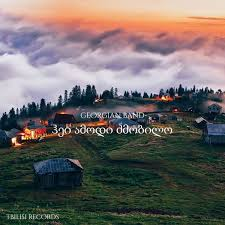

მოგესალმებით, ამ ვებ გვერდზე არის წარმოდგენილი რამოდენიმე ქართული სიმღერა.
პირველი სიმღერა: ჰეი ამოდი ძმობილო.

მეორე სიმღერა: მოდი ვიცეკვოთ ერთად - remix
მესამე სიმღერა: ლალები (ღამის შოუს ბენდი)
მეოთხე სიმღერა: კოხტა გოგო
მეხუთე სიმღერა: ჰოპ ჰოპ (ღამის შოუს ბენდი)